Noxari — UX-skiss, november 2026
Före = nuvarande app. Efter = förslag. Ingen appkod är ändrad. Mobil 390×844.
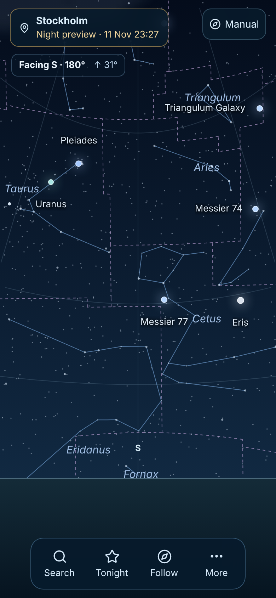
Före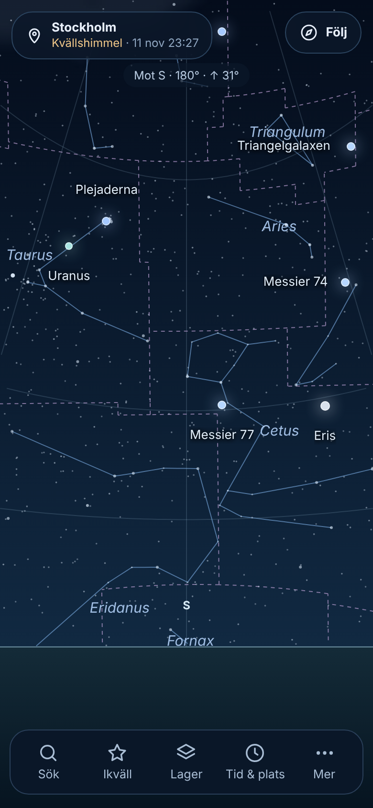
EfterHimlen
- Följ ersätter Manual och följ-knappen i den nedre raden: en tydlig knapp uppe till höger.
- Ny nedre rad i Stellarium-anda: Sök · Ikväll · Lager · Tid & plats · Mer. Himlens inställningar nås med ett tryck.
- Riktningen visas som en liten centrerad rad i stället för en ruta.
- Kvällshimmel-märkningen behålls synlig.
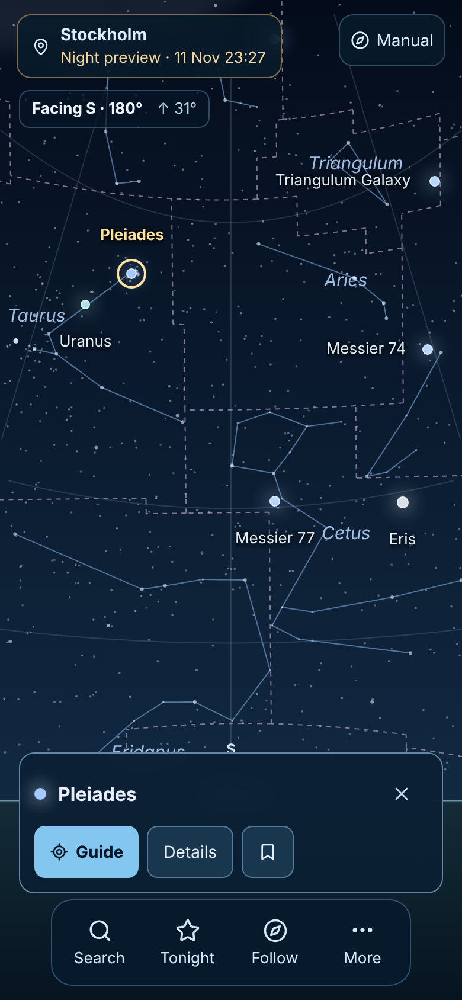
Före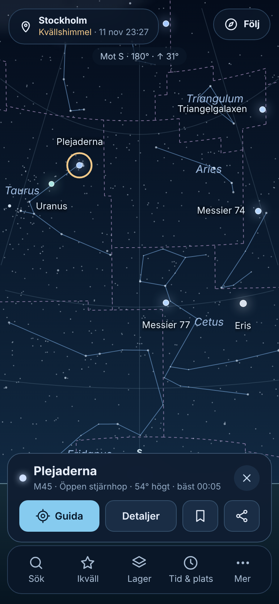
EfterValt objekt
- Kortet visar typ, höjd och bästa tid direkt, så man ofta slipper öppna detaljer.
- Guida, Detaljer, Spara och Dela på samma rad.
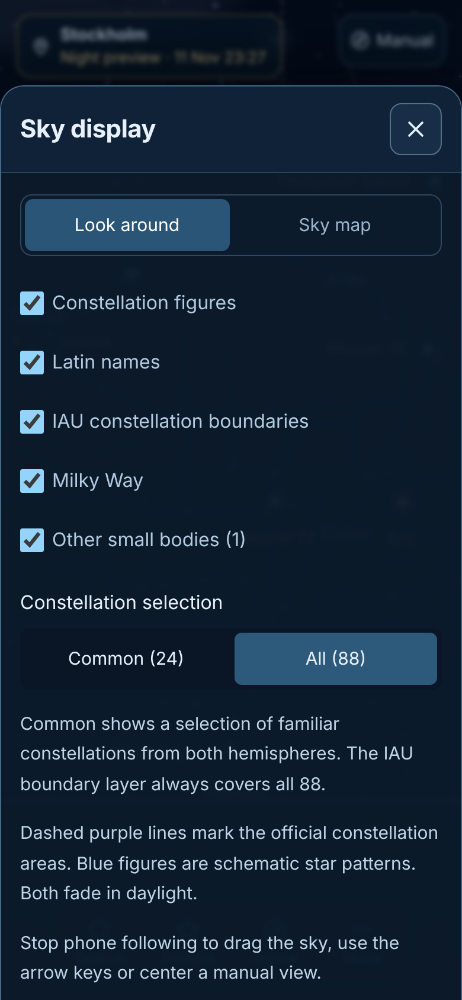
Före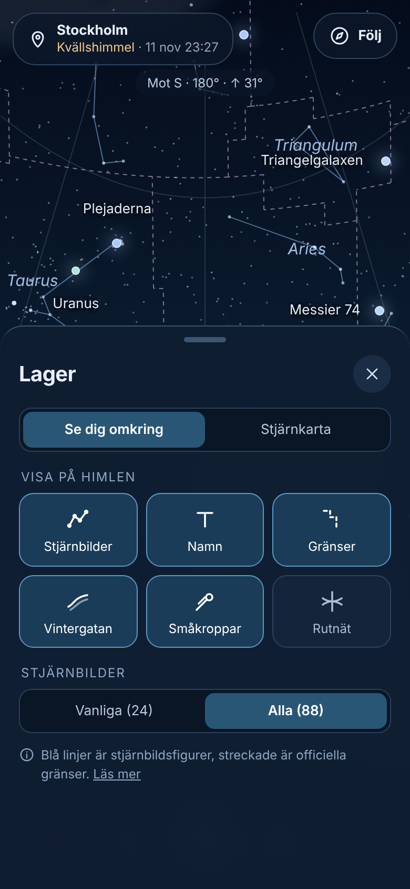
EfterLager
- Ny snabbpanel från knappen Lager, med stora reglage som rutor i stället för små kryssrutor.
- Vy (Se dig omkring / Stjärnkarta) och Vanliga/Alla stjärnbilder på samma ställe.
- Förklarande text kortad till en rad med Läs mer.
- Rutnät visas som möjligt framtida lager (finns inte som val i dag).
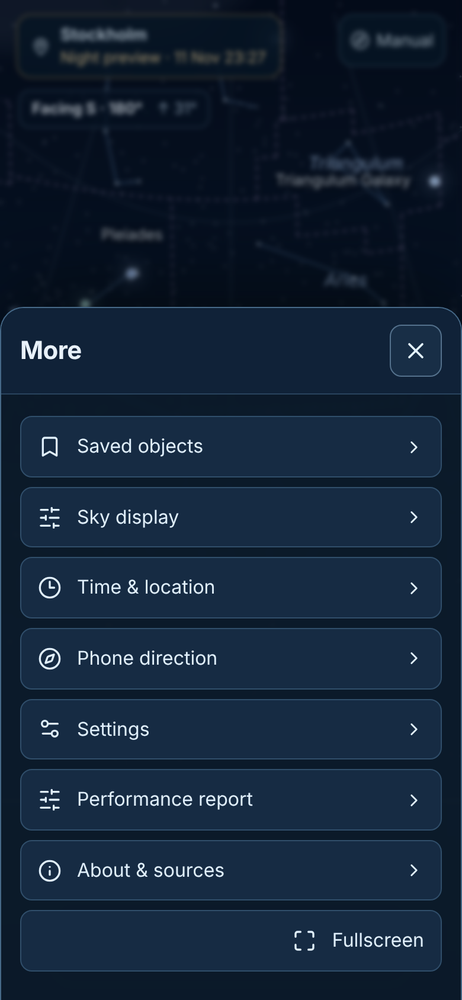
Före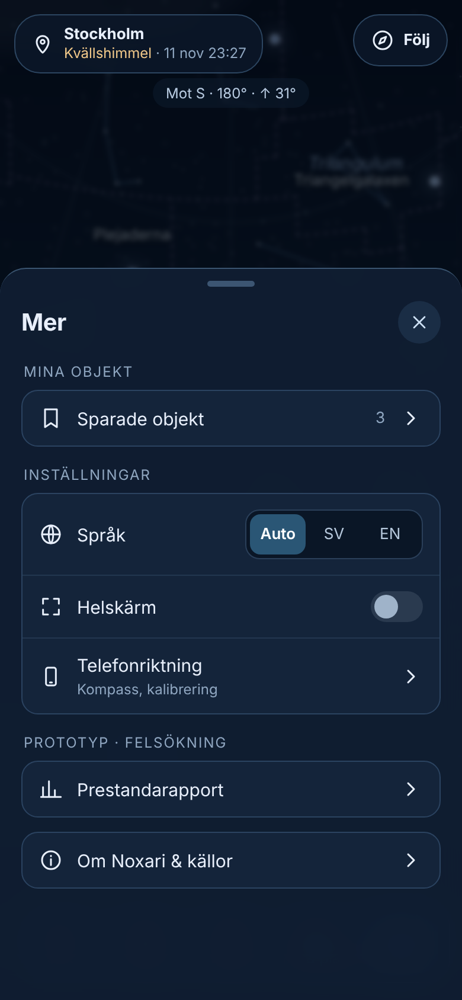
EfterMer
- Grupperat: Mina objekt · Inställningar · Prototyp/felsökning · Om.
- Språk med Auto (följer telefonen) direkt i listan; Visning och Inställningar slås ihop.
- Helskärm blir ett reglage. Felsökningen syns kvar men samlas för sig.
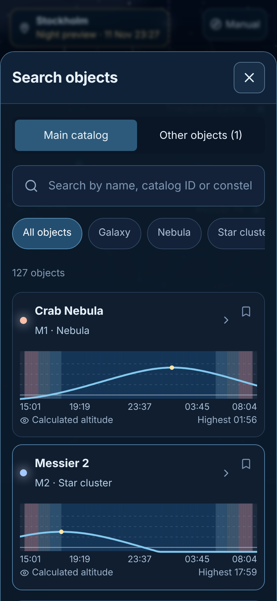
Före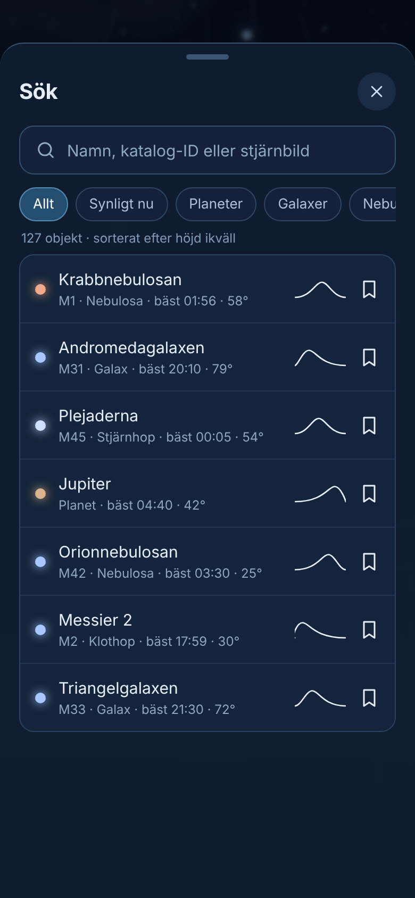
EfterSök
- En rad per objekt med typ, bästa tid och höjd. Liten kurva i stället för stor graf, så fler träffar syns.
- Nytt filter Synligt nu. Svenska namn i svenskt läge.
- Den stora höjdkurvan finns kvar i objektets detaljer.
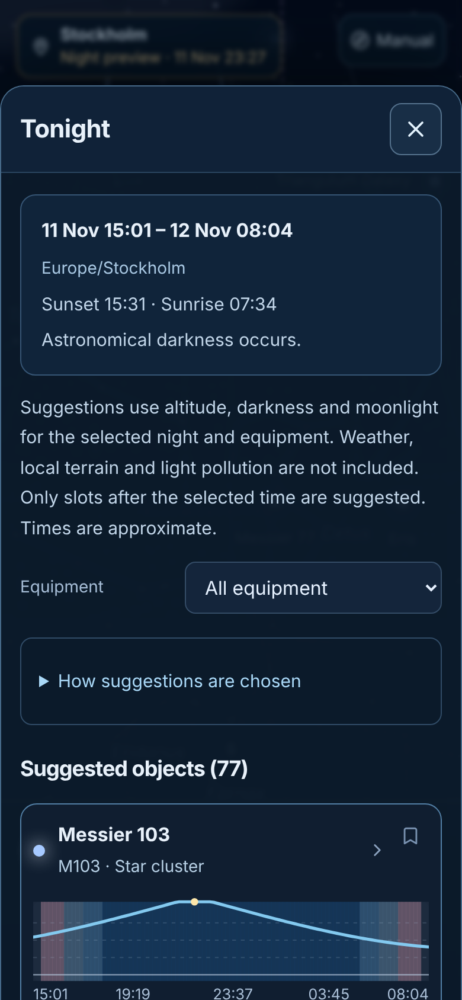
Före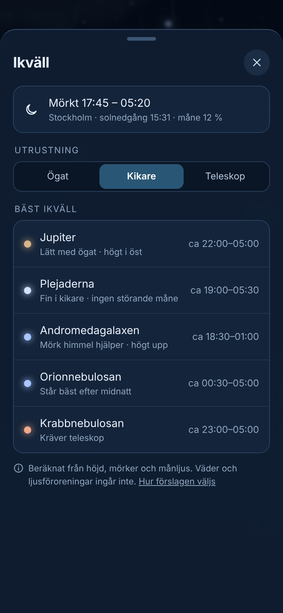
EfterIkväll
- Förslagen kommer först; kort sammanfattning av natten överst.
- Utrustning som tre knappar i stället för rullista.
- Varje förslag har skäl och ungefärlig tid synligt. Begränsningarna står kvar på en rad, med länk till hur förslagen väljs.
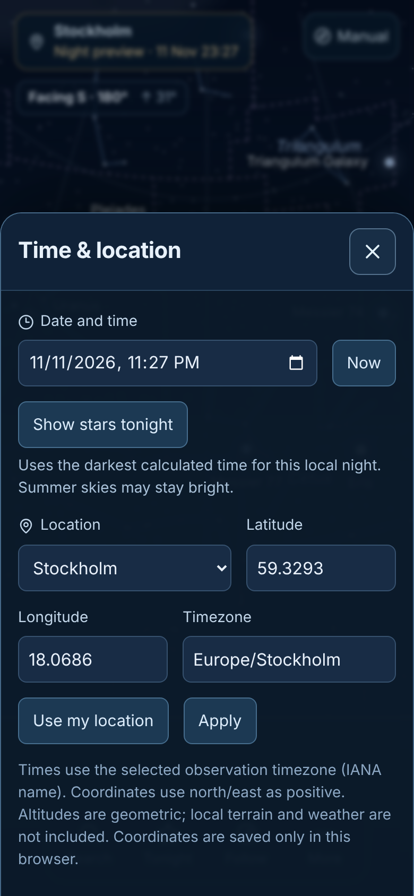
Före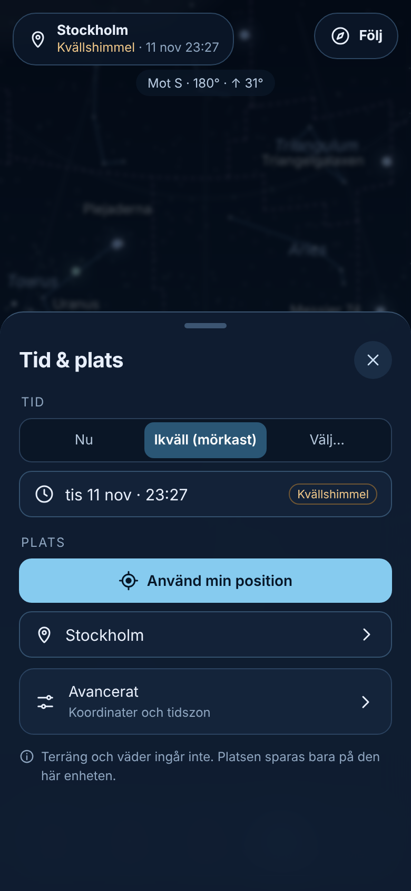
EfterTid & plats
- Tre snabbval: Nu · Ikväll (mörkast) · Välj.
- Använd min position som huvudknapp; ortsval under.
- Koordinater och tidszon flyttas till Avancerat.
Samma som i dag
- Alla lager på vid start, kvällshimmelsstart och synliga felsökningsverktyg (tillfälligt, enligt beslut).
- Himlens rendering, sensorlogik och beräkningar ändras inte.
- Språk: Auto följer telefonens språk; man kan byta.